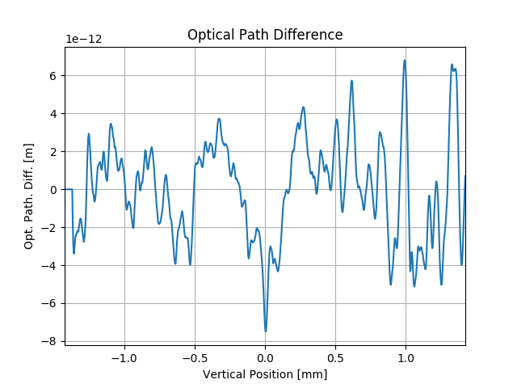

Note
Click here to download the full example code
SRW Example #9¶
Problem¶
Simulating propagation of a Gaussian X-ray beam through a Beamline containing Imperfect Mirrors
Example Solution¶
- 
Out:
SRWLIB Python Example # 9:
Simulating propagation of a Coherent Gaussian X-ray beam through a Beamline containing Imperfect Mirrors
RMS Source Size: 9.787 micro-m; RMS Divergence: 0.813 micro-rad
Defining Transmission element (to simulate mirror surface slope error)...done
Saving optical path difference data to file (for viewing/debugging)...done
Defining Transmission element (to simulate mirror surface slope error)...done
Saving optical path difference data to file (for viewing/debugging)...done
Defining Transmission element (to simulate mirror surface slope error)...done
Saving optical path difference data to file (for viewing/debugging)...done
Propagating wavefront...done in 30 s
Saving propagated wavefront intensity and phase to files...done
Plotting the results (blocks script execution; close any graph windows to proceed) ... done
from __future__ import print_function #Python 2.7 compatibility
from srwpy.srwlib import *
from srwpy.uti_plot import * #required for plotting
import os
import sys
import time
print('SRWLIB Python Example # 9:')
print('Simulating propagation of a Coherent Gaussian X-ray beam through a Beamline containing Imperfect Mirrors')
#**********************Input Parameters and Structures
#***********Folder and Data File Names
strDataFolderName = 'data_example_09' #data sub-folder name
strMirSurfHeightErrInFileName01 = 'mirror1.dat' #mirror surface height error input file name
strMirOptPathDifOutFileName01 = 'ex09_res_opt_path_dif_er_m1.dat' #optical path difference due to mirror surface height error output file name
strMirOptPathDifOutFileName02 = 'ex09_res_opt_path_dif_er_vfm.dat' #optical path difference due to mirror surface height error output file name
strMirOptPathDifOutFileName03 = 'ex09_res_opt_path_dif_er_hfm.dat' #optical path difference due to mirror surface height error output file name
strIntInitOutFileName01 = 'ex09_res_int_in.dat' #initial wavefront intensity distribution output file name
strPhaseInitOutFileName01 = 'ex09_res_phase_in.dat' #initial wavefront phase output file name
strIntPropOutFileName01 = 'ex09_res_int_prop.dat' #propagated wavefront intensity distribution output file name
strPhasePropOutFileName01 = 'ex09_res_phase_prop.dat' #propagated wavefront phase output file name
#***********Gaussian Beam Source
GsnBm = SRWLGsnBm() #Gaussian Beam structure (just parameters)
GsnBm.x = 0 #Transverse Positions of Gaussian Beam Center at Waist [m]
GsnBm.y = 0
GsnBm.z = 0 #Longitudinal Position of Waist [m]
GsnBm.xp = 0 #Average Angles of Gaussian Beam at Waist [rad]
GsnBm.yp = 0
GsnBm.avgPhotEn = 12400 #Photon Energy [eV]
GsnBm.pulseEn = 0.001 #Energy per Pulse [J] - to be corrected
GsnBm.repRate = 1 #Rep. Rate [Hz] - to be corrected
GsnBm.polar = 1 #1- linear hoirizontal
GsnBm.sigX = 23e-06/2.35 #Horiz. RMS size at Waist [m]
GsnBm.sigY = GsnBm.sigX #Vert. RMS size at Waist [m]
constConvRad = 1.23984186e-06/(4*3.1415926536)
rmsAngDiv = constConvRad/(GsnBm.avgPhotEn*GsnBm.sigX) #RMS angular divergence [rad]
print('RMS Source Size:', round(GsnBm.sigX*1.e+06, 3), 'micro-m; RMS Divergence:', round(rmsAngDiv*1.e+06, 3), 'micro-rad')
GsnBm.sigT = 10e-15 #Pulse duration [fs] (not used?)
GsnBm.mx = 0 #Transverse Gauss-Hermite Mode Orders
GsnBm.my = 0
#***********Initial Wavefront
wfr = SRWLWfr() #Initial Electric Field Wavefront
wfr.allocate(1, 100, 100) #Numbers of points vs Photon Energy (1), Horizontal and Vertical Positions (dummy)
wfr.mesh.zStart = 270 #Longitudinal Position [m] at which initial Electric Field has to be calculated, i.e. the position of the first optical element
wfr.mesh.eStart = GsnBm.avgPhotEn #Initial Photon Energy [eV]
wfr.mesh.eFin = GsnBm.avgPhotEn #Final Photon Energy [eV]
wfr.unitElFld = 2 #Electric field units: 0- arbitrary, 1- sqrt(Phot/s/0.1%bw/mm^2), 2- sqrt(J/eV/mm^2) or sqrt(W/mm^2), depending on representation (freq. or time)
distSrc_M1 = wfr.mesh.zStart - GsnBm.z
#Horizontal and Vertical Position Range for the Initial Wavefront calculation
#can be used to simulate the First Aperture (of M1)
firstHorAp = 8.*rmsAngDiv*distSrc_M1 #[m]
firstVertAp = firstHorAp #[m]
wfr.mesh.xStart = -0.5*firstHorAp #Initial Horizontal Position [m]
wfr.mesh.xFin = 0.5*firstHorAp #Final Horizontal Position [m]
wfr.mesh.yStart = -0.5*firstVertAp #Initial Vertical Position [m]
wfr.mesh.yFin = 0.5*firstVertAp #Final Vertical Position [m]
sampFactNxNyForProp = 2 #sampling factor for adjusting nx, ny (effective if > 0)
arPrecPar = [sampFactNxNyForProp]
wfr.partBeam.partStatMom1.x = GsnBm.x #Some information about the source in the Wavefront structure
wfr.partBeam.partStatMom1.y = GsnBm.y
wfr.partBeam.partStatMom1.z = GsnBm.z
wfr.partBeam.partStatMom1.xp = GsnBm.xp
wfr.partBeam.partStatMom1.yp = GsnBm.yp
#***********Optical Elements and Propagation Parameters
#Sequence of Optical Elements:
# <Aperture of M1>
# <M1 Surface Height Error>
# <Drift to VFM>
# <Aperture of KB>
# <VFM>
# <VFM Surface Height Error>
# <Drift to HFM>
# <HFM>
# <HFM Surface Height Error>
# <Drift to Sample>
distM1_VFM = 658.3 #Distance from M1 to VFM [m]
distVFM_HFM = 0.6 #Distance from VFM to HFM [m]
distHFM_Samp = 1.1 #Distance from HFM to Sample [m]
lenM1 = 0.5 #Length of M1 [m]
angM1 = 1.8e-3 #Incident Angle of M1 [rad]
lenKB = 0.5 #Length of VFM and HFM (same for each) [m]
angKB = 3.6e-3 #Incident Angle of VFM and HFM [rad]
#Aperture of M1
opApM1 = SRWLOptA('r', 'a', 10.e-03, lenM1*angM1)
#M1 Surface Height Error
#Read mirror slope arror data from file and setup the corresponding optical element
print('Defining Transmission element (to simulate mirror surface slope error)...', end='')
heightProfData = srwl_uti_read_data_cols(os.path.join(os.getcwd(), strDataFolderName, strMirSurfHeightErrInFileName01), _str_sep='\t', _i_col_start=0, _i_col_end=1)
opTrErM1 = srwl_opt_setup_surf_height_1d(heightProfData, _dim='y', _ang=angM1, _amp_coef=1)
#Use _amp_coef != 1 to scale surface height error
print('done')
print('Saving optical path difference data to file (for viewing/debugging)...', end='')
opPathDifErM1 = opTrErM1.get_data(3, 3)
srwl_uti_save_intens_ascii(opPathDifErM1, opTrErM1.mesh, os.path.join(os.getcwd(), strDataFolderName, strMirOptPathDifOutFileName01), 0,
['', 'Horizontal Position', 'Vertical Position', 'Opt. Path Diff.'], _arUnits=['', 'm', 'm', 'm'])
print('done')
#Drift from M1 to VFH
opDrM1_VFM = SRWLOptD(distM1_VFM)
#Aperture of KB system
opApKB = SRWLOptA('r', 'a', lenKB*angKB, lenKB*angKB)
#VFM simulated by Ideal Lens:
#opVFM = SRWLOptL(_Fy=(distSrc_M1 + distM1_VFM)*(distVFM_HFM + distHFM_Samp)/(distSrc_M1 + distM1_VFM + distVFM_HFM + distHFM_Samp))
#VFM simulated by Extended Elliptical Mirror:
opVFM = SRWLOptMirEl(_p=(distSrc_M1 + distM1_VFM), _q=(distVFM_HFM + distHFM_Samp), _ang_graz=angKB, _size_tang=lenKB, _size_sag=10.e-03,
_nvx=0, _nvy=cos(angKB), _nvz=-sin(angKB), _tvx=0, _tvy=-sin(angKB))
#VFM Surface Height Error
print('Defining Transmission element (to simulate mirror surface slope error)...', end='')
opTrErVFM = srwl_opt_setup_surf_height_1d(heightProfData, _dim='y', _ang=angKB, _amp_coef=1)
#Use _amp_coef != 1 to scale surface height error
print('done')
print('Saving optical path difference data to file (for viewing/debugging)...', end='')
opPathDifErVFM = opTrErVFM.get_data(3, 3)
opPathDifErVFMy = opTrErVFM.get_data(3, 2) #for plotting
srwl_uti_save_intens_ascii(opPathDifErVFM, opTrErVFM.mesh, os.path.join(os.getcwd(), strDataFolderName, strMirOptPathDifOutFileName02), 0,
['', 'Horizontal Position', 'Vertical Position', 'Opt. Path Diff.'], _arUnits=['', 'm', 'm', 'm'])
print('done')
#Drift from VFM to HFM
opDrVFM_HFM = SRWLOptD(distVFM_HFM)
#HFM simulated by Ideal Lens:
#opHFM = SRWLOptL(_Fx=(distSrc_M1 + distM1_VFM + distVFM_HFM)*distHFM_Samp/(distSrc_M1 + distM1_VFM + distVFM_HFM + distHFM_Samp))
#VFM simulated by Extended Elliptical Mirror:
opHFM = SRWLOptMirEl(_p=(distSrc_M1 + distM1_VFM + distVFM_HFM), _q=distHFM_Samp, _ang_graz=angKB, _size_tang=lenKB, _size_sag=10.e-03,
_nvx=cos(angKB), _nvy=0, _nvz=-sin(angKB), _tvx=-sin(angKB), _tvy=0)
#HFM Surface Height Error
print('Defining Transmission element (to simulate mirror surface slope error)...', end='')
opTrErHFM = srwl_opt_setup_surf_height_1d(heightProfData, _dim='x', _ang=angKB, _amp_coef=1)
#Use _amp_coef != 1 to scale surface height error
print('done')
print('Saving optical path difference data to file (for viewing/debugging)...', end='')
opPathDifErHFM = opTrErHFM.get_data(3, 3)
srwl_uti_save_intens_ascii(opPathDifErHFM, opTrErHFM.mesh, os.path.join(os.getcwd(), strDataFolderName, strMirOptPathDifOutFileName03), 0,
['', 'Horizontal Position', 'Vertical Position', 'Opt. Path Diff.'], _arUnits=['', 'm', 'm', 'm'])
print('done')
#Drift from HFM to Sample
opDrHFM_Samp = SRWLOptD(distHFM_Samp)
#Wavefront Propagation Parameters:
#[0]: Auto-Resize (1) or not (0) Before propagation
#[1]: Auto-Resize (1) or not (0) After propagation
#[2]: Relative Precision for propagation with Auto-Resizing (1. is nominal)
#[3]: Allow (1) or not (0) for semi-analytical treatment of the quadratic (leading) phase terms at the propagation
#[4]: Do any Resizing on Fourier side, using FFT, (1) or not (0)
#[5]: Horizontal Range modification factor at Resizing (1. means no modification)
#[6]: Horizontal Resolution modification factor at Resizing
#[7]: Vertical Range modification factor at Resizing
#[8]: Vertical Resolution modification factor at Resizing
#[9]: Type of wavefront Shift before Resizing (not yet implemented)
#[10]: New Horizontal wavefront Center position after Shift (not yet implemented)
#[11]: New Vertical wavefront Center position after Shift (not yet implemented)
# [0][1][2] [3][4] [5] [6] [7] [8] [9][10][11]
#prParInit = [0, 0, 1., 1, 0, 2., 5., 2., 3., 0, 0, 0]
prParInit = [0, 0, 1., 1, 0, 2., 5., 6., 3., 0, 0, 0]
prPar0 = [0, 0, 1., 1, 0, 1., 1., 1., 1., 0, 0, 0]
#prParPost = [0, 0, 1., 1, 0, 0.06, 3., 0.1, 2., 0, 0, 0]
prParPost = [0, 0, 1., 1, 0, 0.06, 3., 0.04, 2., 0, 0, 0] #Post-propagation resizing parameters
#NOTE: in this case of simulation, it can be enough to define the precision parameters only Before and After
#the propagation through the entire Beamline. However, if necessary, different propagation parameters can be specified
#for each optical element.
#The optimal values of propagation parameters may depend on photon energy and optical layout.
#"Beamline" - a sequenced Container of Optical Elements (together with the corresponding wavefront propagation parameters,
#and the "post-propagation" wavefront resizing parameters for better viewing).
optBL = SRWLOptC([opApM1, opTrErM1, opDrM1_VFM, opApKB, opVFM, opTrErVFM, opDrVFM_HFM, opHFM, opTrErHFM, opDrHFM_Samp],
[prParInit, prPar0, prPar0, prPar0, prPar0, prPar0, prPar0, prPar0, prPar0, prPar0, prParPost])
#**********************Calculation
#***********Initial Wavefront of Gaussian Beam
#Initial Wavefront and extracting Intensity:
srwl.CalcElecFieldGaussian(wfr, GsnBm, arPrecPar)
mesh0 = deepcopy(wfr.mesh)
arI0 = array('f', [0]*mesh0.nx*mesh0.ny) #"flat" array to take 2D intensity data
srwl.CalcIntFromElecField(arI0, wfr, 6, 0, 3, mesh0.eStart, 0, 0) #extracts intensity
srwl_uti_save_intens_ascii(arI0, mesh0, os.path.join(os.getcwd(), strDataFolderName, strIntInitOutFileName01), 0,
['Photon Energy', 'Horizontal Position', 'Vertical Position', 'Spectral Fluence'], _arUnits=['eV', 'm', 'm', 'J/eV/mm^2'])
arI0x = array('f', [0]*mesh0.nx) #array to take 1D intensity data (for plotting)
srwl.CalcIntFromElecField(arI0x, wfr, 6, 0, 1, mesh0.eStart, 0, 0) #extracts intensity
arI0y = array('f', [0]*mesh0.ny) #array to take 1D intensity data
srwl.CalcIntFromElecField(arI0y, wfr, 6, 0, 2, mesh0.eStart, 0, 0) #extracts intensity
arP0 = array('d', [0]*mesh0.nx*mesh0.ny) #"flat" array to take 2D phase data (note it should be 'd')
srwl.CalcIntFromElecField(arP0, wfr, 6, 4, 3, mesh0.eStart, 0, 0) #extracts radiation phase
srwl_uti_save_intens_ascii(arP0, mesh0, os.path.join(os.getcwd(), strDataFolderName, strPhaseInitOutFileName01), 0,
['Photon Energy', 'Horizontal Position', 'Vertical Position', 'Phase'], _arUnits=['eV', 'm', 'm', 'rad'])
#***********Wavefront Propagation
print('Propagating wavefront...', end='')
t0 = time.time();
srwl.PropagElecField(wfr, optBL)
print('done in', round(time.time() - t0), 's')
print('Saving propagated wavefront intensity and phase to files...', end='')
mesh1 = deepcopy(wfr.mesh)
arI1 = array('f', [0]*mesh1.nx*mesh1.ny) #"flat" array to take 2D intensity data
srwl.CalcIntFromElecField(arI1, wfr, 6, 0, 3, mesh1.eStart, 0, 0) #extracts intensity
srwl_uti_save_intens_ascii(arI1, mesh1, os.path.join(os.getcwd(), strDataFolderName, strIntPropOutFileName01), 0,
['Photon Energy', 'Horizontal Position', 'Vertical Position', 'Spectral Fluence'], _arUnits=['eV', 'm', 'm', 'J/eV/mm^2'])
arI1x = array('f', [0]*mesh1.nx) #array to take 1D intensity data (for plotting)
srwl.CalcIntFromElecField(arI1x, wfr, 6, 0, 1, mesh1.eStart, 0, 0) #extracts intensity
arI1y = array('f', [0]*mesh1.ny) #array to take 1D intensity data
srwl.CalcIntFromElecField(arI1y, wfr, 6, 0, 2, mesh1.eStart, 0, 0) #extracts intensity
arP1 = array('d', [0]*mesh1.nx*mesh1.ny) #"flat" array to take 2D phase data (note it should be 'd')
srwl.CalcIntFromElecField(arP1, wfr, 6, 4, 3, mesh1.eStart, 0, 0) #extracts radiation phase
srwl_uti_save_intens_ascii(arP1, mesh1, os.path.join(os.getcwd(), strDataFolderName, strPhasePropOutFileName01), 0,
['Photon Energy', 'Horizontal Position', 'Vertical Position', 'Phase'], _arUnits=['eV', 'm', 'm', 'rad'])
print('done')
#**********************Plotting Results (requires 3rd party graphics package)
print(' Plotting the results (blocks script execution; close any graph windows to proceed) ... ', end='')
plotMesh0x = [1000*mesh0.xStart, 1000*mesh0.xFin, mesh0.nx]
plotMesh0y = [1000*mesh0.yStart, 1000*mesh0.yFin, mesh0.ny]
uti_plot2d(arI0, plotMesh0x, plotMesh0y, ['Horizontal Position [mm]', 'Vertical Position [mm]', 'Spectral Fluence Before Propagation'])
uti_plot1d(arI0x, plotMesh0x, ['Horizontal Position [mm]', 'Spectral Fluence [J/eV/mm^2]', 'Spectral Fluence (horizontal cut at y = 0)'])
uti_plot1d(arI0y, plotMesh0y, ['Vertical Position [mm]', 'Spectral Fluence [J/eV/mm^2]', 'Spectral Fluence (vertical cut at x = 0)'])
#uti_plot2d(arP0, plotMesh0x, plotMesh0y, ['Horizontal Position [mm]', 'Vertical Position [mm]', 'Phase Before Propagation'])
plotMirErrMesh0x = [1000*opTrErVFM.mesh.xStart, 1000*opTrErVFM.mesh.xFin, opTrErVFM.mesh.nx]
plotMirErrMesh0y = [1000*opTrErVFM.mesh.yStart, 1000*opTrErVFM.mesh.yFin, opTrErVFM.mesh.ny]
uti_plot2d(opPathDifErVFM, plotMirErrMesh0x, plotMirErrMesh0y, ['Horizontal Position [mm]', 'Vertical Position [mm]', 'Optical Path Difference due to VFM Error'])
uti_plot1d(opPathDifErVFMy, plotMirErrMesh0y, ['Vertical Position [mm]', 'Opt. Path. Diff. [m]', 'Optical Path Difference'])
plotMesh1x = [1e+06*mesh1.xStart, 1e+06*mesh1.xFin, mesh1.nx]
plotMesh1y = [1e+06*mesh1.yStart, 1e+06*mesh1.yFin, mesh1.ny]
uti_plot2d(arI1, plotMesh1x, plotMesh1y, ['Horizontal Position [um]', 'Vertical Position [um]', 'Spectral Fluence After Propagation'])
uti_plot1d(arI1x, plotMesh1x, ['Horizontal Position [um]', 'Spectral Fluence [J/eV/mm^2]', 'Spectral Fluence (horizontal cut at y = 0)'])
uti_plot1d(arI1y, plotMesh1y, ['Vertical Position [um]', 'Spectral Fluence [J/eV/mm^2]', 'Spectral Fluence (vertical cut at x = 0)'])
#uti_plot2d(arP1, plotMesh1x, plotMesh1y, ['Horizontal Position [um]', 'Vertical Position [um]', 'Phase After Propagation'])
uti_plot_show() #show all graphs (blocks script execution; close all graph windows to proceed)
print('done')
Total running time of the script: ( 0 minutes 32.887 seconds)